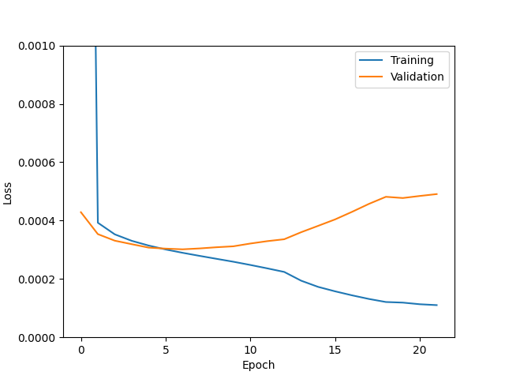
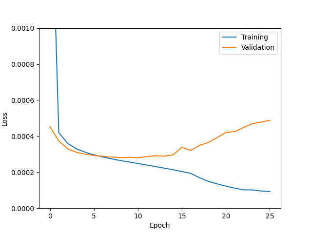
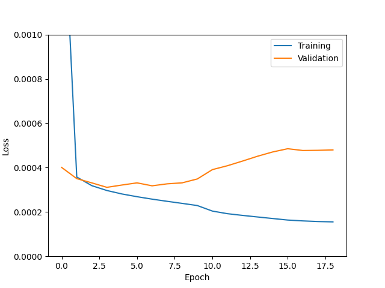
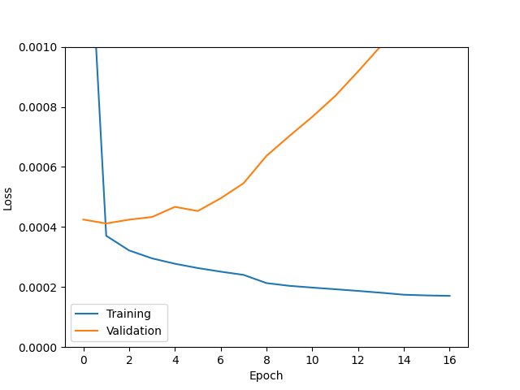
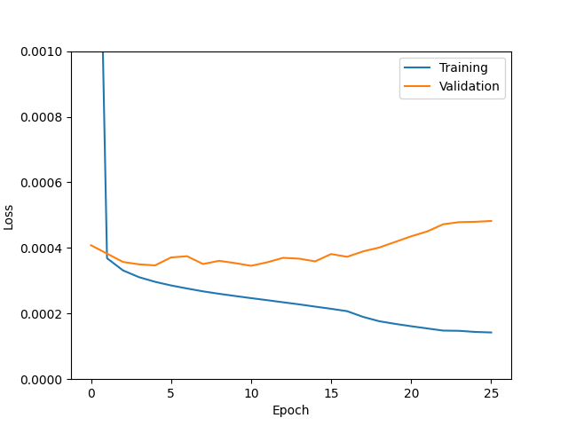
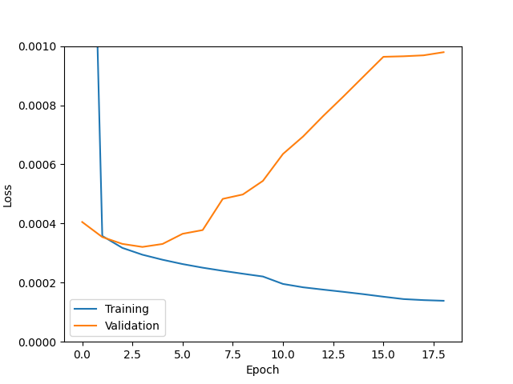
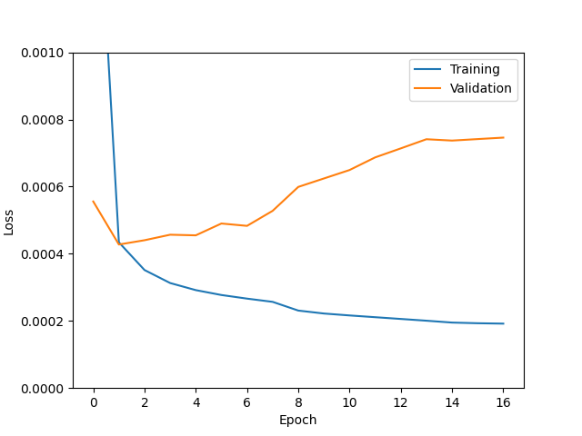
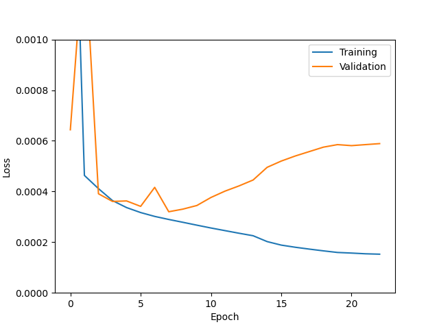

| UNet | Code base | Resolution | Channels | True positive rates | Comments | Loss curve |
|---|---|---|---|---|---|---|
| Average pool | New | High | 64 | 0.177, 0.397, 0.627, 0.829 | Effective like a low-resolution UNet, except there's an extra average pooling layer at the beginning and upconvolution at the end. |  |
| Normal1 | New | Low | 64 | 0.189, 0.425, 0.661, 0.846 | Best performance on low resolution. |  |
| Old1 | Old | Low | 64 | 0.156, 0.368, 0.614, 0.808 |  | |
| Old2 | Old | High | 64 | 0.130, 0.285, 0.554, 0.740 |  | |
| Old3 | Old | Low | 32 | 0.149, 0.345, 0.639, 0.848 |  | |
| Old4 | Old | High | 32 | 0.210, 0.427, 0.654, 0.836 |  | |
| Normal2 | New | High | 64 | 0.094, 0.155, 0.400, 0.639 | Suffers from overfitting. Dropout 10%. |  |
| Normal3 | New | High | 32 | 0.197, 0.405, 0.625, 0.804 | The only difference from "Normal2" is we decreased the number of channels, and overfitting became much less of an issue. |  |